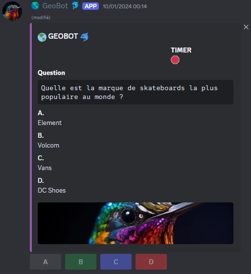
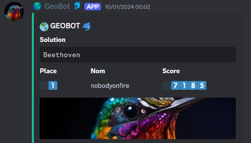
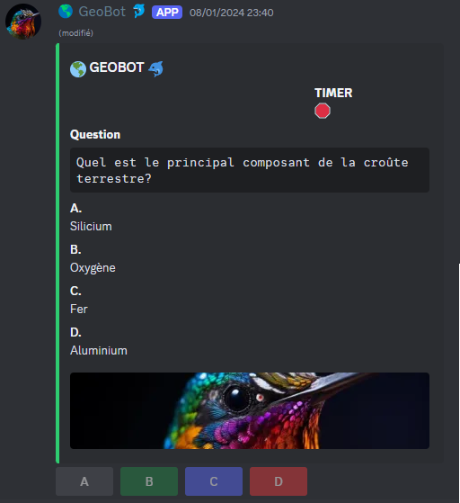

BOT Quizz - GEOBOT
Résumé du projet
Ce projet consiste à développer un bot Discord en Python qui anime des sessions de quiz interactives. Les utilisateurs peuvent choisir la difficulté souhaitée et participer à une série de questions à choix multiples. Le bot gère en temps réel la distribution des questions, la collecte des réponses et l'attribution de points en fonction de la justesse et de la rapidité des réponses, créant ainsi une expérience ludique et compétitive pour toute la communauté.
Structure de la solution
Fonctionnalités principales
- Sélection de la difficulté et génération de quiz : L’utilisateur choisit un niveau de difficulté, et le bot propose une série de questions à choix multiples.
- Participation en temps réel et système de points : Les participants répondent sur Discord, et le bot attribue les points en fonction de la justesse et de la rapidité.
Technologies utilisées
- Python : Développement et logique métier du bot.
- Discord.py : Gestion des interactions et des commandes en temps réel.
- Base de données MongoDB : Stockage des scores, historique des quiz et statistiques.
Points forts du projet
- Expérience interactive et ludique : Le bot stimule la participation en temps réel et renforce la convivialité dans la communauté.
- Motivation par le challenge : Le système de points et la rapidité incitent les utilisateurs à s’améliorer et à jouer régulièrement.
Liens associés
Galerie


